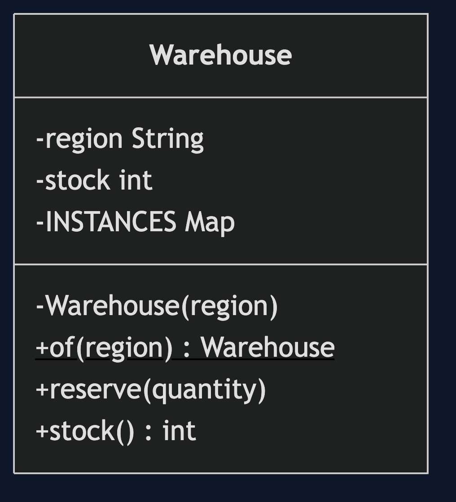
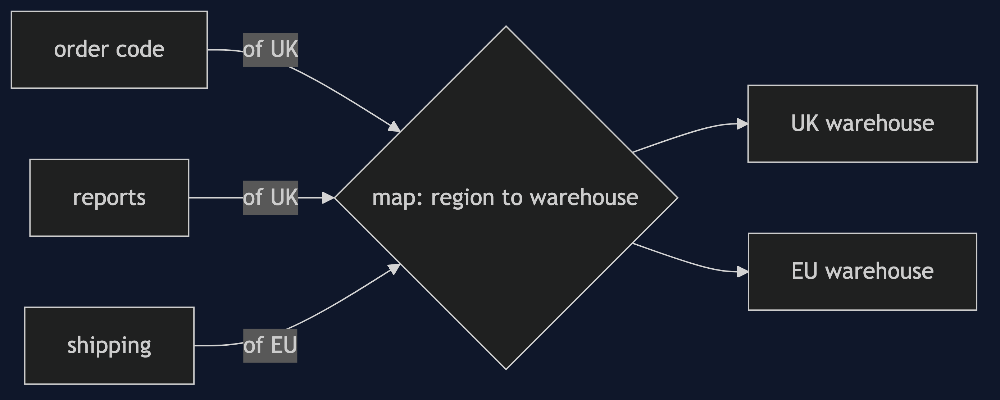
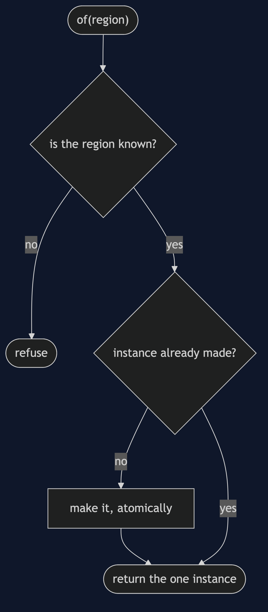
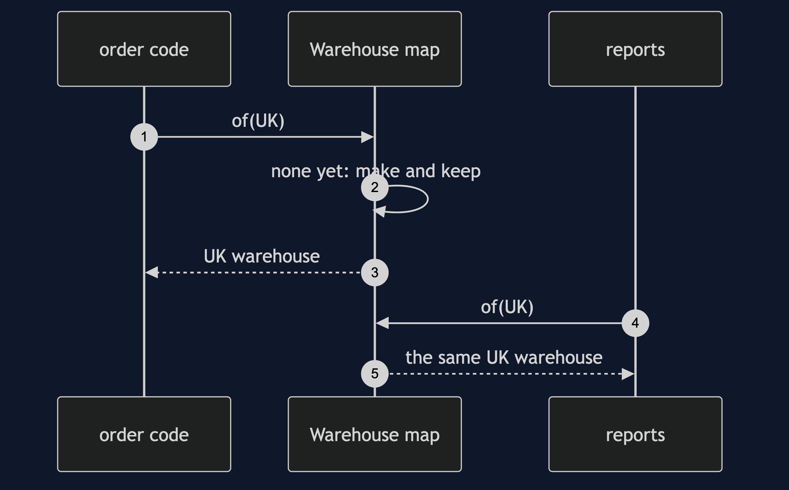
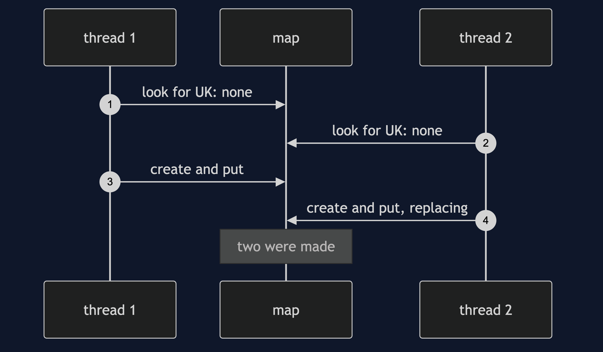

Multiton Pattern
src/main/java/com/jk/explore/multiton/
├── MultitonDemo.java the six acts
├── Warehouse.java one instance per region, made once
│
└── NaiveWarehouses.java looks first, creates second, no lockMultiton: one instance per key, always the same one for the same key.
This project is in foundational-design-patterns. It is Singleton with a key, and it is what a Registry becomes when the registry creates its own entries.
Run
./gradlew runSix acts. Every number quoted below comes from this program's own output.
ONE. A new one each time.
two callers each made a UK warehouse. same object: false. A has stock 90, B has 100.
the shop now believes two different things about one warehouse.
TWO. One per region.
asked for UK twice: same object: true. asked for EU: same as UK: false. created so far: 2.
THREE. Shared, so they agree.
one part of the shop reserved 10 in the UK. another part, asking for UK, sees stock 90. the EU warehouse has 100.
FOUR. A fixed set of keys.
asked for MARS: refused, "no warehouse in MARS". instances held: 3.
FIVE. Two threads, one region.
look first, create second, no lock: both threads looked before either created. same object: false. created: 2.
with an atomic create-if-absent: 8 threads at once, same object: true. created: 1.
SIX. The bill.
one test reserved 30. the next test starts, and asks for UK: stock 70, not 100. state leaks from one test to the next.
the instances live as long as the program does: held 1, and nothing ever lets one go.
and any code can reach any warehouse from anywhere, so who changed the stock is hard to say.Test
./gradlew test2 test classes, 7 test methods, offline, with nothing installed and no framework.
Technologies and versions
| What | Version | Why it is here |
|---|---|---|
| Java | 21 | The repository standard, via the Gradle toolchain block |
| Gradle | 9.2.1 | The wrapper in this directory; no separate install needed |
| JUnit 5 | 5.10.2 | Test runner |
No framework. A hand-built project stays plain Java so the mechanism is the whole lesson.
Learning Material
| Document | What it covers |
|---|---|
docs/problem-statement.md | The scenario, and the problem |
docs/multiton-pattern-explained.md | The pattern, and six acts |
docs/class-diagram.md | The types |
docs/architecture-diagram.md | The parts and how they connect |
docs/data-flow-diagram.md | What happens to one request |
docs/sequence-diagram.md | Written for a listener with the screen off |
docs/uml-diagram.md | Four sequences |
docs/animation.html | The six acts in a browser |
docs/prerequisites.md | What you need to know |
docs/session.md | A one-hour taught session |
docs/spec.md | The generated specification |
docs/youtube.md | Title, description and chapters |
The pattern in one picture

Where each piece sits

How one request moves

Who calls whom, in order

All four sequences

Video
Built from video/scenes.py by video/build_video.sh. The rendered file is not committed; see the repository README for why.
Where you have already met this
java.util.Currency, logger factories that return one logger per name, and enum constants.
When this is too much
If an enum can name the fixed set, use an enum. If the object can be passed in, pass it in. A multiton is global state with a key.
Where this sits
This project is in foundational-design-patterns, and is meant to be read with its neighbours there.